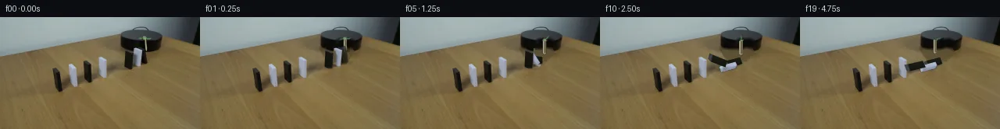

![首帧]()

Round 00
2026-11-06T05:54:17.705064+00:00像素候选变化代码 +389/−0inspection 更新
pixels 3fd5734b2143deed · code 841d4ae4355afad7
查看本轮 generate.py 真实 diff
--- previous/generate.py
+++ current/generate.py
@@ -0,0 +1,389 @@
+"""PixelWorld case 0049: the wooden stick on the rotating black platform sweeps
+left and knocks the first domino (d7) of the back row; the cascade propagates
+d7 -> d6 -> d5 and stops at the gap; the front row d1-d4 never moves.
+
+Method (full write-up in METHOD.md):
+ * static background : source frame with d5/d6/d7 + contact shadows + stick +
+ green rotor removed (analytic wood/shadow fill, cv2 Telea on the platform,
+ same-row wood-grain residual transfer);
+ * dominoes : the three back-row dominoes are fitted as 8-vertex box
+ silhouettes directly from frame 0 and animated by a rigid 2-D rotation about
+ their leading bottom edge, fall axis measured from base-to-base positions;
+ shaded faces (main face, top cap, shaded end) are painted far-to-near with
+ projected soft ground shadows, 4x supersampled;
+ * rotor / stick : green rotor patch cut from frame 0 is rigidly rotated
+ and translated along its lid orbit; the wooden stick stays vertical and
+ sweeps with the hub, drawn behind the dominoes;
+ * frame 0 : untouched first_frame.png.
+"""
+import numpy as np, cv2
+from pathlib import Path
+from PIL import Image
+from artifact_io import save
+
+WS = Path(__file__).parent
+SS = 4 # supersampling factor
+H_IMG, W_IMG = 144, 256
+
+# ---------------------------------------------------------------- geometry
+# unit screen direction of the fall (leading edge -> next domino), from bases
+FALL = np.array([-0.965, 0.263])
+UP = np.array([0.0, -1.0])
+
+# fitted box silhouette in frame 0 (screen px):
+# b0/b1 = leading / trailing bottom corners (leading = fall side, image left)
+# u0/u1 = top edge corners over b0/b1
+# c0/c1 = cap back edge corners (top surface)
+# d7 (black, farthest), d6 (white), d5 (black, nearest)
+DOMINOES = [
+ dict(name='d7', color='b',
+ b0=(182.0, 59.6), b1=(190.2, 58.8),
+ u0=(182.3, 42.0), u1=(190.3, 41.0),
+ c0=(181.4, 38.6), c1=(189.6, 38.0)),
+ dict(name='d6', color='w',
+ b0=(175.7, 62.2), b1=(180.8, 61.4),
+ u0=(175.6, 43.4), u1=(180.8, 42.6),
+ c0=(172.4, 40.0), c1=(179.8, 39.4)),
+ dict(name='d5', color='b',
+ b0=(160.6, 64.4), b1=(169.2, 63.2),
+ u0=(160.8, 44.3), u1=(169.8, 43.6),
+ c0=(163.4, 40.0), c1=(170.3, 39.3)),
+]
+
+PALETTE = {
+ 'b': dict(face_top=np.array([27, 27, 22.]), face_bot=np.array([15, 15, 11.]),
+ end=np.array([40, 32, 21.]),
+ cap=np.array([54, 59, 62.]), cap_hi=np.array([63, 68, 71.]),
+ lie=1.18),
+ 'w': dict(face_top=np.array([171, 185, 207.]), face_bot=np.array([149, 156, 171.]),
+ end=np.array([124, 129, 145.]),
+ cap=np.array([177, 192, 214.]), cap_hi=np.array([188, 200, 219.]),
+ lie=1.06),
+}
+
+# tilt per frame (deg): d7 pushed first, then d6, then d5; gap stops the chain
+ALPHA = {
+ 'd7': [0, 8, 18, 35, 55, 72, 85, 90, 90, 90, 90, 90, 90, 90, 90, 90, 90, 90, 90, 90],
+ 'd6': [0, 0, 0, 6, 12, 28, 45, 62, 76, 86, 90, 90, 90, 90, 90, 90, 90, 90, 90, 90],
+ 'd5': [0, 0, 0, 0, 0, 0, 2, 12, 30, 46, 60, 74, 85, 90, 90, 90, 90, 90, 90, 90],
+}
+
+# rotor / stick orbit on the lid (ellipse); clockwise from above = front moves
+# left, so phi increases (0=right, 90=front)
+AX_C, AY_C, AX_R, AY_R = 179.0, 27.5, 6.6, 2.8
+TH0 = np.deg2rad(-21.0)
+OMEGA = np.deg2rad(10.0) # per frame; 190 deg across 5 s
+STICK_LEN = 17.0
+HUB0 = np.array([185.2, 26.5])
+
+# ---------------------------------------------------------------- background
+def build_background(src):
+ """Remove back-row dominoes, shadows, stick, rotor; fill table analytically,
+ platform face with Telea, re-add wood-grain residual from clean neighbours."""
+ H, W, _ = src.shape
+ fsrc = src.astype(np.float32)
+ yy, xx = np.mgrid[0:H, 0:W]
+ m = np.zeros((H, W), bool)
+ for x0, y0, x1, y1 in [(175, 22, 197, 31), # rotor
… diff truncated; 302 more lines …